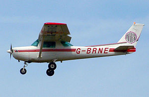
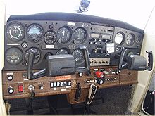
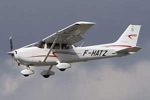
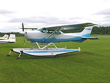
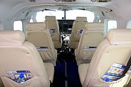
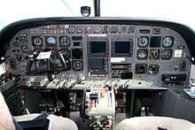
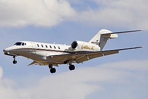
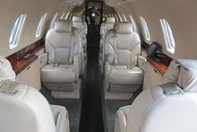
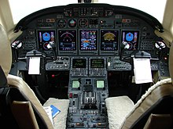

Cessna Caravan
Cessna CaravanAviationology
Home |
About |
Airbus |
Bombardier |
Boeing |
Cessna |
Videos |
Facts |
Welcome to the Cessna Page! The Cessna Aircraft Company (/ˈsɛsnə/[3]) was an American general aviation aircraft manufacturing corporation headquartered in Wichita, Kansas. The company produced small, piston-powered aircraft, as well as business jets. For much of the mid-to-late 20th century, Cessna was one of the highest-volume and most diverse producers of general aviation aircraft in the world. It was founded in 1927 and was purchased by General Dynamics in 1985, then by Textron, Inc., in 1992. In March 2014, when Textron purchased the Beechcraft and Hawker Aircraft corporations, Cessna ceased operations as a subsidiary company and joined the others as one of the three distinct brands produced by Textron Aviation.[4]
Clyde Cessna, a farmer in Rago, Kansas, built his own aircraft and flew it in June 1911. He was the first person to do so between the Mississippi River and the Rocky Mountains. Cessna started his wood-and-fabric aircraft ventures in Enid, Oklahoma, testing many of his early planes on the salt flats. When bankers in Enid refused to lend him more money to build his planes, he moved to Wichita.[5] Cessna DC-6 Cessna Aircraft was formed when Clyde Cessna and Victor Roos became partners in the Cessna-Roos Aircraft Company in 1927. Roos resigned just one month into the partnership, selling back his interest to Cessna.[6] Shortly afterward, Roos's name was dropped from the company name.[7]
The Cessna 152 is an American two-seat, fixed-tricycle-gear, general aviation airplane, used primarily for flight training and personal use. It was based on the earlier Cessna 150 incorporating a number of minor design changes and a slightly more powerful engine with a longer time between overhaul. The Cessna 152 has been out of production for more than thirty years, but many are still airworthy and are still in regular use for flight training.
| Cessna 152 Taking-Off | Cockpit |
The Cessna 172 Skyhawk is an American four-seat, single-engine, high wing, fixed-wing aircraft made by the Cessna Aircraft Company.[2] First flown in 1955,[2] more 172s have been built than any other aircraft.[3] It was developed from the 1948 Cessna 170, using tricycle undercarriage, rather than a tail-dragger configuration. Measured by its longevity and popularity, the Cessna 172 is the most successful aircraft in history. Cessna delivered the first production model in 1956, and as of 2015, the company and its partners had built more than 44,000 units.[1][4][5] The aircraft remains in production today. The Skyhawk's main competitors have been the Beechcraft Musketeer and Grumman AA-5 series (neither currently in production), the Piper Cherokee, and, more recently, the Diamond DA40 and Cirrus SR20.[6]
| Cessna 172 Taking-Off | Cessna 172 Seaplane Version |
The Cessna 208 Caravan is a utility aircraft produced by Cessna. The project was commenced on November 20, 1981, and the prototype first flew on December 9, 1982. The production model was certified by the FAA in October 1984 and its Cargomaster freighter variant was developed for FedEx. The 4 ft (1.2 m) longer 208B Super Cargomaster first flew in 1986 and was developed into the passenger 208B Grand Caravan. The strutted, high wing 208 typically seats nine passengers in its unpressurized cabin, is powered by a single Pratt & Whitney Canada PT6A tractor turboprop and has a fixed tricycle landing gear, floats or skis. By November 2017, 2,600 have been delivered and 20 million flight hours logged. Caravans are used for flight training, commuter airlines, VIP transport, air cargo and humanitarian missions.
| Cessna Caravan |
Cabin | Cockpit |
The Cessna Citation X[a] is an American business jet produced by Cessna and part of the Citation family. Announced at the October 1990 NBAA convention, the Model 750 made its maiden flight on December 21, 1993, received its type certification on June 3, 1996 and was first delivered in July 1996. The updated Citation X+ was offered from 2012 with a 14 in (360 mm) cabin stretch and upgraded systems. Keeping the Citation III fuselage cross section, it has a new 37° swept wing with an area of 527 ft² (49 m2) for a fast Mach 0.935 MMo and a 36,600 lb (16.6 t) MTOW for a 3,460 nmi (6,408 km) range, a T-tail and two 7,034 lbf (31.29 kN) AE3007 turbofans. After 338 deliveries, production ended in 2018.
| Cessna Citation X | Cabin | Cockpit |